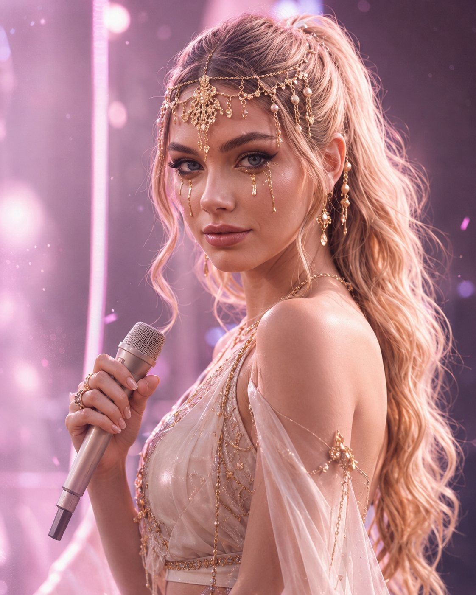
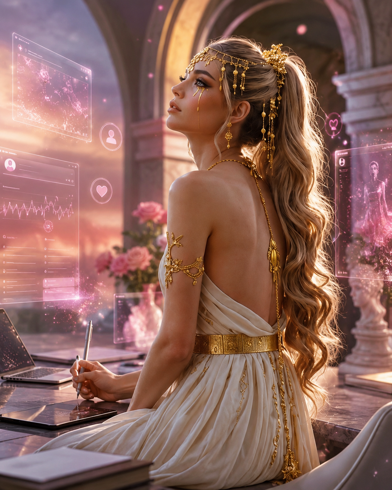
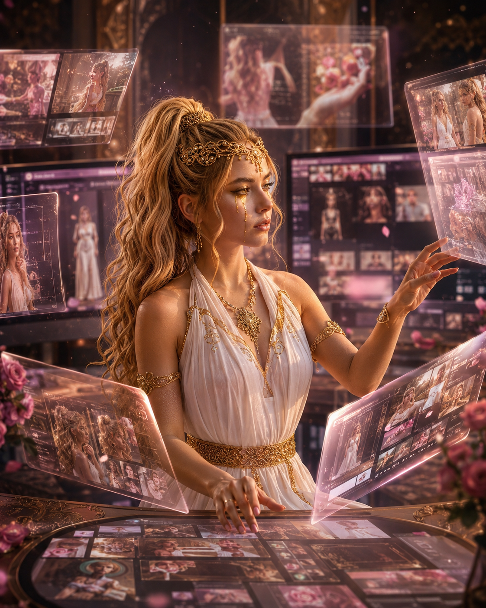
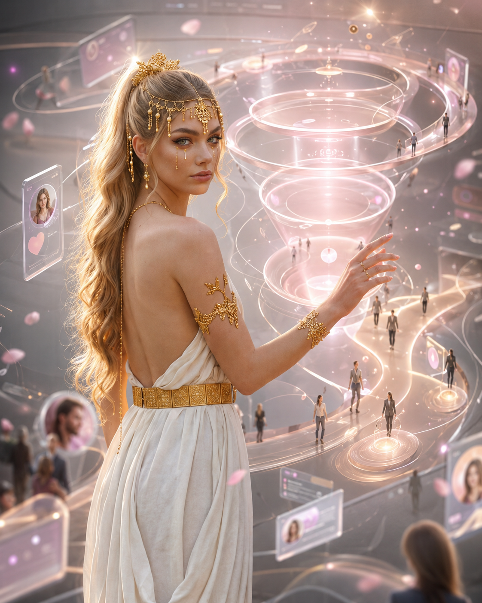

Il nome ATHANASYA richiama il greco antico e l’idea di immortalità: ‘colei che non muore mai’. Da questa radice nasce ATHY, il volto abbreviato, più diretto e riconoscibile dell’identità virtuale.
ATHY è una voce AI, un volto digitale, una presenza sospesa tra musica, estetologia e immortalità visiva. È una cantante e influencer virtuale generata con il supporto dell’intelligenza artificiale, nata dalla ricerca estetologica di Federica Creative e dal rapporto tra avatar AI, identità digitale e strategie senza volto.
ATHY sarà la protagonista visuale del progetto Avatar Strategy AI: un’identità artistica e strategica capace di parlare per l’agenzia, rappresentare il servizio, produrre contenuti, sostenere il personal brand e mostrare come un avatar possa diventare una figura narrativa, musicale e comunicativa.
Non è un volto generico e non è una persona reale: è una presenza digitale progettata per vivere nel tempo attraverso immagini, voce, musica, video, storytelling e contenuti AI. In questa prospettiva, ATHY diventa una figura di confine: tra umano e artificiale, tra estetica e marketing, tra immagine e memoria, tra performance e identità.
ATHANASYA è il progetto-identità. ATHY è il volto. Avatar Strategy AI è il metodo.

Cantante virtuale
ATHY interpreta il ruolo di performer digitale: una voce, un volto e un immaginario pensati per videoclip, teaser, contenuti social e narrazione musicale.

Strategia senza volto
ATHY dimostra come un brand, un artista o un professionista possa comunicare senza esporsi direttamente, mantenendo riconoscibilità, emozione e continuità narrativa.

Brand character
Un avatar può diventare personaggio, guida e volto simbolico di un progetto, rendendo più memorabile la comunicazione e più coerente il racconto del brand.

AI Content System
ATHANASYA permette di generare contenuti seriali: immagini, video brevi, storytelling, teaser, reel, copertine, visual e materiali per funnel digitali.

Funnel e conversione
L’avatar non resta solo estetica: può diventare ingresso del funnel, attivare curiosità, guidare verso una pagina servizio e trasformare attenzione in richiesta di consulenza.

Estetologia e identità digitale
ATHY apre una riflessione sul confine tra vero e artificiale, corpo digitale, bellezza sintetica, fiducia e nuove forme di relazione tra persona, tecnologia e immagine.
Per Socialin, un avatar AI non sostituisce la relazione umana: la rende visibile, organizzata e narrativamente più potente.
Trasparenza: ATHANASYA / ATHY è un’identità virtuale artistica sviluppata con il supporto di tecnologie di intelligenza artificiale.
Richiedi una consulenza Avatar Strategy AI